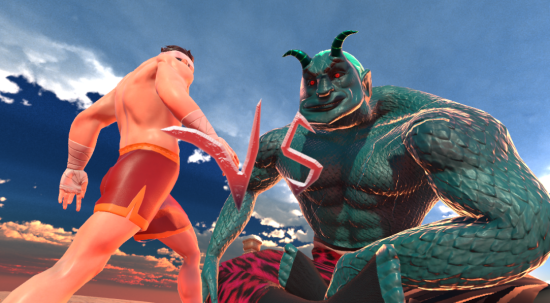
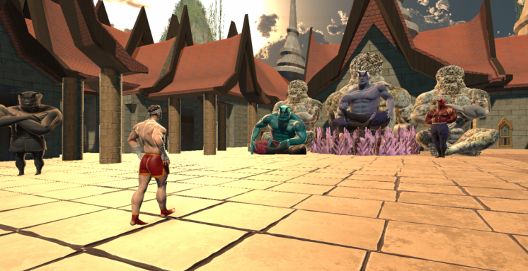
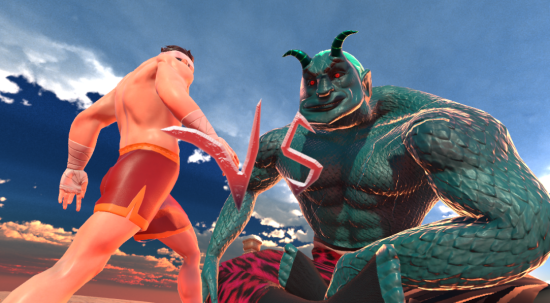
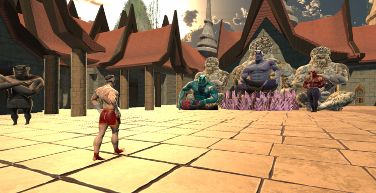

My most passionate project—an incredible opportunity to learn and gain hands-on experience in directing and creating a game. Together with a talented team of graphic designers and programmers, we brought this game to life within an intense two-month timeframe.
My passion
Creating my own fighting game has always been a dream of mine. Martial arts and training play a significant role in my life, and I draw inspiration from games that embody these passions. This drive fueled the development of Shura's Gauntlet, a fighting game and boss rush experience that emphasizes storytelling. In this section, I’m thrilled to showcase the elements of the project that I’m most proud of. I hope you enjoy the journey!
Introduction
Shura’s Gauntlet is an original fighting game, featuring our main character, Bom, on his journey to defeat the demon king and lift the Curse of the Shura. In this game, you’ll battle your way through fierce adversaries, kicking and punching toward your ultimate goal—the head of the demon king. But beware; a final test awaits you at the journey’s end… What could it be?
As the game’s director, I’m grateful for my team’s dedication and talent, which has been invaluable in bringing this vision to life. This project has truly been a collaborative effort, and I couldn't be more appreciative of everyone involved in shaping Bom’s story. Please check out our trailer and subscribe to our channel if you’d like to follow along with our journey!
Work I'm Proud Of
In this section, I’ll showcase code and other elements from this project that I’m especially proud of. I’ll share insights into what I’ve learned along the way and highlight the aspects I found most interesting.
AI Movement Script
I'm really proud of learning how to make AI function effectively within a game environment. It’s been a challenging yet rewarding experience to see the virtual characters come to life, adapting their behaviors based on player actions. In working with this AI Movement script, I've encountered some complex concepts that have significantly broadened my understanding of game development.
How the Script Works
This script controls an AI character's movements and behaviors in a the game. Here are some key components:
AI States: The AI has different states, defined by the AIState enum, which allows it to switch between being idle, moving towards the player, circling the player, fighting, dodging, or grappling. This state management is crucial for creating dynamic interactions in gameplay.
switch (currentState)
{
case AIState.Idle:
myAnimation.SetBool("isGameStarted", true);
currentState = AIState.MovingToPlayer;
break;
case AIState.MovingToPlayer:
// Follow the player
transform.Translate(Vector3.forward * followSpeed * Time.deltaTime);
// Check if within attack range
if (distanceToPlayer <= attackRange)
{
currentState = AIState.Fighting;
}
break;
case AIState.CirclingPlayer:
// Circle around the player
transform.Translate(Vector3.forward * followSpeed * Time.deltaTime);
circlePoint = CalculateCirclePoint();
// Check if should switch back to fighting the player
if (distanceToPlayer <= attackRange)
{
currentState = AIState.Fighting;
}
break;
case AIState.Fighting:
if (!grabbingController.isGrabbing)
{
if (distanceToPlayer > attackRange + 1f)
{
currentState = AIState.MovingToPlayer;
CancelAnim(currentAnimation);
}
else if (Time.time - lastDodgeTime >= dodgeRate && ShouldDodge())
{
CancelAnim(currentAnimation);
currentState = AIState.Dodging;
DodgePlayer();
lastDodgeTime = Time.time;
}
else if (distanceToPlayer <= attackRange && !isDodgingPlayer && !isAttackingPlayer)
{
isAttackingPlayer = true;
ChooseAnimation();
}
}
else
{
CancelAnim(currentAnimation);
currentState = AIState.Grapple;
}
break;
case AIState.Dodging:
// Do nothing while dodging
break;
case AIState.Grapple:
CancelAnim(currentAnimation);
break;
}
Movement Logic: The AI uses Vector3.Distance to determine its distance from the player and decides whether to move, attack, or dodge based on that distance. The AI follows the player using transform.Translate, which updates its position in real time.
Animation Handling: The script uses Unity's Animator component to manage character animations. The AI chooses animations based on its state and the type of boss it represents. This aspect of the script has taught me how to integrate animations with game mechanics, making the character's actions feel fluid and responsive.
// Perform the chosen animation
currentAnimation = chosenAnimation;
myAnimation.SetBool(chosenAnimation, true);
StartCoroutine(AttackIsOnCooldown());
}
private string ChooseDefaultAnimation()
{
int randomIndex = Random.Range(0, 4);
string[] animations = { "isRightKicking", "isLeftKicking", "isRightKickCombo", "isLeftKickCombo" };
return animations[randomIndex];
}
private string ChooseKiyoHimeAnimation()
{
int randomIndex = Random.Range(0, 4);
string[] animations = { "isLeftPunching", "isRightPunching", "isLeftPunchCombo", "isRightPunchCombo" };
return animations[randomIndex];
}
private string ChooseDemonNagaAnimation()
{
int randomIndex = Random.Range(0, 6);
string[] animations = { "isRightKicking", "isLeftKicking", "isRightKickCombo", "isLeftKickCombo", "isRJabbing", "isRJabbing" };
return animations[randomIndex];
}
private string ChooseDemonYakshaAnimation()
{
int randomIndex = Random.Range(0, 6);
string[] animations = { "isRightKicking", "isLeftKicking", "isRightKickCombo", "isLeftKickCombo" , "isLJabbing" , "isRJabbing" };
return animations[randomIndex];
}
private string ChooseEvilBomAnimation()
{
int randomIndex = Random.Range(0, 7);
string[] animations = { "isLeftPunching", "isRightPunching", "isLeftPunchCombo", "isRightPunchCombo", "isRightPunchTripple", "isLJabbing", "isRJabbing" };
return animations[randomIndex];
}
Dodging Mechanism: The AI incorporates a dodging system that allows it to avoid attacks. It checks if it's time to dodge based on the dodgeRate and uses a coroutine (PerformDodge) to move away from the player's attacks. Learning how to implement timing and cooldowns for actions has been one of the hardest but most valuable lessons in this project.
Vector3 CalculateCirclePoint()
{
Vector3 directionToPlayer = player.position - transform.position;
Vector3 perpendicular = Vector3.Cross(directionToPlayer, Vector3.up);
return player.position + perpendicular.normalized * circleRadius;
}
void DodgePlayer()
{
// Set dodge direction (randomly left or right)
float dodgeDirectionValue = Random.Range(0, 3) == 0 ? -1 : 1;
dodgeDirection = transform.right * dodgeDirectionValue;
// Start dodge coroutine
StartCoroutine(PerformDodge());
}
public IEnumerator PerformDodge()
{
isDodgingPlayer = true;
float timer = 0f;
while (timer < dodgeDuration)
{
// Move in the dodge direction
transform.Translate(dodgeDirection * dodgeSpeed * Time.deltaTime);
// Increment timer
timer += Time.deltaTime;
yield return null;
}
isDodgingPlayer = false;
currentState = AIState.MovingToPlayer;
}
bool ShouldDodge()
{
// Adjust the dodging probability as needed
return Random.value < 0.5f; // 50% chance of dodging
}
Ground Check: The EnsureGrounded function ensures that the AI character remains above the ground. This was particularly tricky to implement since it required understanding raycasting and collision detection in Unity, but mastering this has improved the character's realism in terms of movement and interaction with the game environment.
Takeaways
The hardest parts of this script involved managing the complexity of state transitions and ensuring that the AI behaves realistically. Understanding how to balance probabilities for actions, such as attacking or dodging, required a good grasp of game design principles and player experience.
Overall, this experience has deepened my appreciation for AI in games and equipped me with the skills to create more engaging and interactive gameplay. I look forward to applying these concepts in future projects as I continue my journey in game development.
Models
Given the tight timeframe of this project, our graphic designer had a significant challenge: to create demon models for our main protagonist to battle against. To help lighten the load, I took on the task of designing several of these models myself. In fact, I ended up creating most of them, albeit using a rather streamlined approach. I took the model of our main antagonist, the demon king, and morphed and twisted it into a brand new demon design. I applied the same technique to the other models as well. Here are the results:
 



Player Script
The following script represents a crucial component of the gameplay mechanics in our fighting game, focusing on the player character's interactions, health management, and round transitions. It incorporates various elements such as damage handling, animations, and audio cues, allowing for a dynamic and responsive gaming experience. Through this script, I learned how to manage player states effectively, utilize coroutines for timed events, and coordinate interactions between different game components.
How the Script Works
Health Management: The script efficiently tracks player health, allowing for both damage intake and defensive actions like blocking. Implementing the TakeDamage method showcases how to differentiate between blocking and taking damage, which adds depth to player interactions.
public void TakeDamage(int damage)
{
if (isBlocking)
{
blockSound.Play();
myAnimation.SetBool("isBlocking", true);
myAnimation.SetBool("isHit", false);
health.SetHealth(playercurrentHealth);
blockDamage = true;
playercurrentHealth -= damage / 3;
StartCoroutine(ResetBlockingAnimation(0.5f)); // Reset animation after 2 seconds
}
else if (canTakeDamage)
{
playercurrentHealth -= damage;
health.SetHealth(playercurrentHealth);
myAnimation.SetBool("isBlocking", false);
myAnimation.SetBool("isHit", true);
blockDamage = false;
if (playercurrentHealth <= 0)
{
roundsLost++;
myAnimation.SetBool("HasLost", true);
if (roundsLost == 1)
BossDot1.color = Color.red;
else if (roundsLost == 2)
BossDot2.color = Color.red;
PlayerDie();
}
}
}
Coroutines for Timed Actions: By using coroutines, I learned how to manage timing for events such as round transitions and animations. This approach allows for smoother gameplay, ensuring that visual and audio cues occur at the right moments.
IEnumerator StartNextRound()
{
boss.myAnimation.SetBool("isGameStarted", false);
myAnimation.SetBool(winLoseAnimation, true);
yield return new WaitForSeconds(2.5f);
RoundTwo.enabled = true;
AIMovement[] aiMovements = FindObjectsOfType();
PlayerInput[] playerInputs = FindObjectsOfType();
transform.position = playerSpawnPosition.position;
boss.transform.position = enemySpawnPosition.position;
playercurrentHealth = playermaxHealth;
boss.bosscurrentHealth = boss.bossmaxHealth;
health.SetHealth(playermaxHealth);
boss.health.SetHealth(boss.bossmaxHealth);
foreach (AIMovement aiMovement in aiMovements)
{
aiMovement.enabled = false;
}
foreach (PlayerInput playerInput in playerInputs)
{
playerInput.enabled = false;
}
secondRound.SetActive(true);
RoundTwo.enabled = true;
Fight.enabled = false;
yield return new WaitForSeconds(1f);
secondRound.SetActive(false);
yield return new WaitForSeconds(1.5f);
fightText.SetActive(true);
RoundTwo.enabled = false;
Fight.enabled = true;
Animation Control: The integration of animations through the Animator component demonstrates how to connect gameplay mechanics with visual feedback, enhancing the player's experience and immersion.
Game State Management: The script's ability to transition between rounds and handle game-over scenarios illustrates effective game state management. This knowledge will be invaluable for structuring future scripts and ensuring a cohesive gaming flow.
Player and AI Interaction: The script also manages interactions between the player and AI components, ensuring that both can operate independently while still contributing to the overall gameplay.
.gif)
Thank you for your time!
If you have found interest in the game go ahead and visit our itch.io website!